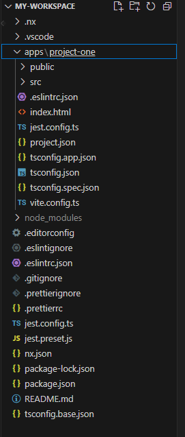

An Introduction to Nx: The Ultimate Tool for Monorepos
Posted on August 1, 2024
What is Nx?
Nx is a powerful build system with first-class monorepo support and powerful integrations. It enables developers to manage multiple projects within a single workspace, making it easier to share code, configuration, and tooling across projects. This approach helps to maintain consistency, reduce duplication, and streamline the development process.
Nx, short for “Nrwl Extensions,” is an open-source development toolkit designed to help teams manage monorepos more efficiently. Nx can be used with various front-end and back-end frameworks, including React, Angular, VueJS( in v17), NestJS, and more.
Why Use Nx?
Nx is beneficial for large-scale applications where multiple teams work on different parts of a system. By centralizing projects in a monorepo, Nx simplifies dependency management, encourages code reuse, and provides a unified build and test process. Here are some of the main advantages and potential drawbacks of using Nx:
Pros:
- 1. Monorepo Management: Nx excels at handling monorepos, which allows you to manage multiple projects (applications and libraries) in a single repository. This can simplify dependency management and code sharing.
- 2. Enhanced Developer Experience: Nx provides a range of tools and plugins to streamline development, including generators for scaffolding new projects, and executors for running tasks like builds and tests. It also supports advanced code analysis and linting.
- 3. Workspace Integration: Nx integrates well with popular tools and frameworks such as React, Angular, and Node.js. It provides first-class support for these frameworks and allows you to use them within the same workspace.
- 4. Code Sharing: With Nx, you can create and manage shared libraries within your workspace. This promotes code reuse and consistency across different projects.
- 5. Optimized Builds: Nx uses advanced build caching and computation caching techniques to speed up builds and tests. This can significantly reduce build times by reusing previous build outputs and test results.
- 6. Integrated Testing: Nx has built-in support for testing with Jest and Cypress, making it easier to set up and run unit and end-to-end tests.
- 7. Extensible: Nx is highly extensible and allows you to create custom plugins and schematics to suit your project’s needs.
Cons:
- 1. Learning Curve: Nx introduces additional concepts and tools that may require a learning curve, especially for developers unfamiliar with monorepos or the specific frameworks Nx supports.
- 2. Overhead for Small Projects: For smaller projects or simpler setups, the overhead of configuring and maintaining an Nx workspace may not be justified. It’s more beneficial for larger projects with multiple applications and libraries.
- 3. Complexity: Managing a monorepo with Nx can add complexity, particularly when dealing with many interdependencies between projects. This requires careful planning and organization.
- 4. Plugin Compatibility: While Nx supports a wide range of plugins, you might encounter compatibility issues with some third-party tools or libraries. It’s important to ensure that the plugins you need are supported or can be integrated.
- 5. Performance Impact: Although Nx’s caching mechanisms are designed to improve performance, the initial setup and configuration can sometimes introduce overhead that affects performance, especially in very large codebases.
Despite these challenges, Nx offers significant benefits for teams looking to improve their development workflow and maintain high-quality codebases across multiple projects.
Creating an Nx Workspace with Shared Components
Step 1: Install Nx CLI and Create a Workspace
First, install the Nx CLI globally and create a new Nx workspace:
npm install -g nx
npx create-nx-workspace@latest my-workspaceInitial Project folder structure looks as follows:
Step 2: Generate the Second React Project
Navigate to your workspace directory and generate a second React project:
cd my-workspace
nx generate @nrwl/react:application project-twoStep 3: Create a Sharable Library
Generate a new library for shared components:
nx generate @nrwl/react:library shared-uiStep 4: Create the Sharable Input Field
Navigate to the shared-ui library and create the CustomInput component:
cd shared-ui/src/lib/
Create a file named CustomInput.tsx with the following
content:
import React from 'react';
import './InputField.css';
interface InputFieldProps {
label: string;
value: string;
onChange: (e: React.ChangeEvent<HTMLInputElement>) => void;
}
const CustomInput: React.FC<InputFieldProps> = ({ label, value, onChange }) => {
return (
<div className="input-field">
<label>{label}</label>
<input type="text" value={value} onChange={onChange} />
</div>
);
};
export default CustomInput;
Create a CSS file named InputField.css:
.input-field {
display: flex;
flex-direction: column;
margin-bottom: 16px;
}
.input-field label {
margin-bottom: 8px;
font-weight: bold;
}
.input-field input {
padding: 8px;
border: 1px solid #ccc;
border-radius: 4px;
}
Step 5: Export the Component from the Library
Open shared-ui/src/index.ts and export the CustomInput
component:
export { default as CustomInput } from './lib/CustomInput';
export { default as SharedUI } from './lib/shared-ui';
Step 6: Use the Sharable Input Field in Both Projects
In Project One, open apps/project-one/src/app/app.tsx and
use the CustomInput component:
import React, { useState } from 'react';
import { CustomInput } from '@my-workspace/shared-ui';
export function App() {
const [value, setValue] = useState('');
return (
<div>
<h1>Project One</h1>
<CustomInput label="Input Field" value={value} onChange={(e) => setValue(e.target.value)} />
<p>Input Value: {value}</p>
</div>
);
}
export default App;
In Project Two, open apps/project-two/src/app/app.tsx and
use the CustomInput component:
import React, { useState } from 'react';
import { CustomInput } from '@my-workspace/shared-ui';
export function App() {
const [value, setValue] = useState('');
return (
<div>
<h1>Project Two</h1>
<CustomInput label="Input Field" value={value} onChange={(e) => setValue(e.target.value)} />
<p>Input Value: {value}</p>
</div>
);
}
export default App;
Step 7: Serve the Projects
Finally, serve the projects to see the shared InputField component in action:
nx serve project-one
nx serve project-twoYou should see the InputField component working in both projects. This demonstrates how you can create a sharable library in an Nx monorepo and use it across multiple applications.
Understanding Affected Commands
Nx has powerful tooling to help you understand the impact of changes in your monorepo. The affected commands are useful when you want to know which projects or libraries are affected by your recent changes. Here are some of the key affected commands:
-
nx affected:apps: Lists the applications that are affected by the changes in your codebase. -
nx affected:libs: Lists the libraries that are affected by the changes in your codebase. -
nx affected:dep-graph: Generates a dependency graph showing how the projects in your workspace relate to each other and highlights the affected projects. -
nx affected:test: Runs tests only for the affected projects. -
nx affected:lint: Runs lint checks only for the affected projects.
Example Usage:
Suppose you made changes in the shared-ui library. To find out which applications are affected by this change, you can use:
nx affected:appsIf you want to see a visual representation of how the changes affect your projects:
nx affected:dep-graphThis will generate a graph showing the dependencies and highlight the affected projects and libraries.
Build Commands
The build command compiles the code for your projects. In an Nx workspace, you can build individual projects or build all projects at once. Here’s how you use the build commands:
-
nx build <project-name>: Builds a specific project. -
nx affected:build: Builds only the affected projects.
Example Usage:
To build project-one, you would use:
nx build project-oneIf you made changes and want to build only the affected projects (which might be more efficient than building everything), you can use:
nx affected:build